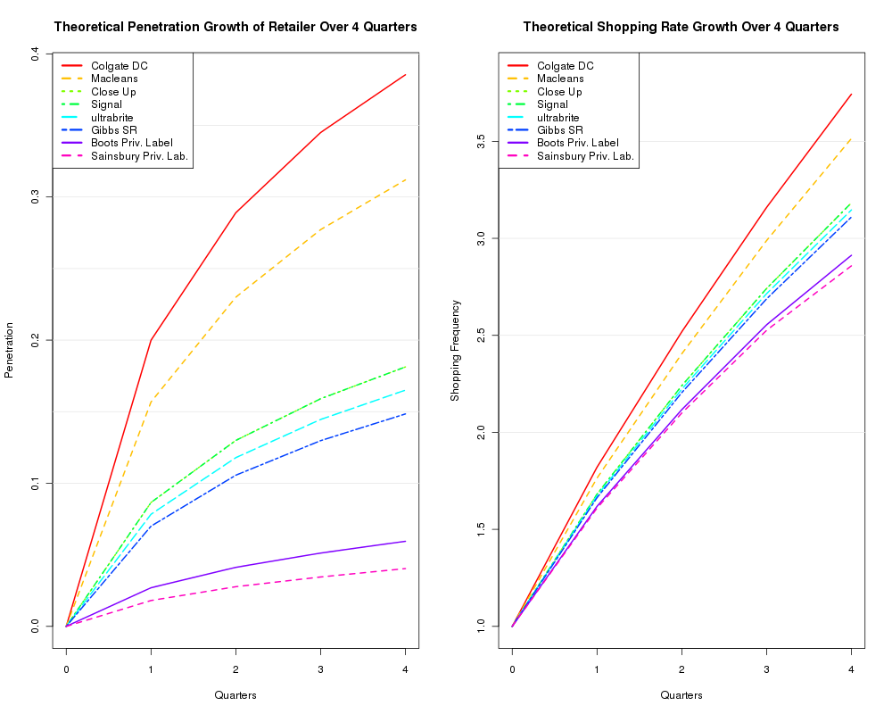

User Guide on R Package NBDdirichlet
Table of Contents
1 Introduction
The Dirichlet (aka NBD-Dirichlet) model is a well known marketing research model for describing the purchase incidence and brand choice of consumer products1. We estimate the model and summarize various theoretical quantities of interest to marketing researchers. We also provides functions for making tables that compare observed and theoretical statistics.
A user can simply use the function dirichlet to estimate the
model, after supplying the following minimum set of parameters:
- cat.pen
- A numeric vector of product category penetration, which is the observed proportion of category buyers over a specific time period.
- cat.buyrate
- A numeric vector of Category buyers' average purchase rate in a given period. This is derived as the total number of category purchase occasions divided by the total number of category buyers during a time period.
- brand.share
- A numeric vector of brand market share. We typically define it as the proportions of purchase occasions that belong to different brands during the time period.
- brand.pen.obs
- A numeric vector of observed brand penetration, which is the proportion of buyers for each brand during the time period.
- brand.name
- A character vector of the brand names. If not given (default), use "B1", "B2", "B3", etc.
Then the user can apply the method functions print, plot, and
summary on the object returned from the dirichlet function to
make various model observations.
2 Usage Illustration
We use the data from the example mentioned in 1 (section 3). They are Toothpaste purchase data in UK in 1st quarter of 1973 from the AGB panel (5240 static panelists).
From the data we can calculate the following:
- The overal penetration of the toothpaste category is 56%.
- The toothpaste buyer spends an average \pounds 2.6 per quarter.
- The market share and penetration of each brand is shown in the
following table:
Brand Name: Colgate DC Macleans Close Up Signal ultrabrite Market Share: 0.25 0.19 0.1 0.1 0.09 Market Penetration: 0.2 0.17 0.09 0.08 0.08 Brand Name: Gibbs SR Boots Priv. Label Sainsbury Priv. Lab. Market Share: 0.08 0.03 0.02 Market Penetration: 0.07 0.03 0.02
Thus we can supply the following input to the model:
cat.pen <- 0.56 # Category Penetration
cat.buyrate <- 2.6 # Category Buyer's Average Purchase Rate in a given period.
brand.share <- c(0.25, 0.19, 0.1, 0.1, 0.09, 0.08, 0.03, 0.02) # Brands' Market Share
brand.pen.obs <- c(0.2,0.17,0.09,0.08,0.08,0.07,0.03,0.02) # Brand Penetration
brand.name <- c("Colgate DC", "Macleans","Close Up","Signal","ultrabrite",
"Gibbs SR","Boots Priv. Label","Sainsbury Priv. Lab.")
Then we can call the main function to estimate the NBD-Dirichlet model:
library(NBDdirichlet) dobj <- dirichlet(cat.pen, cat.buyrate, brand.share, brand.pen.obs, brand.name)
It will not produce any visible result. But we can quickly check the 3 estimated NBD-Dirichlet model parameters (\(M, K, S\)).
print(dobj)
Number of Brands in the Category = 8 Brand List : Colgate DC : Macleans : Close Up : Signal : ultrabrite : Gibbs SR : Boots Priv. Label : Sainsbury Priv. Lab. Brands' Market Shares: 0.25 0.19 0.1 0.1 0.09 0.08 0.03 0.02 Brands' Penetration: 0.2 0.17 0.09 0.08 0.08 0.07 0.03 0.02 Multiple of Base Time Period: 1 , Current M = 1.456 Category Penetration = 0.56 , with Buying Rate = 2.6 Estimated Dirichlet Model Parameters: NBD: M = 1.46 , K = 0.78 ; Dirichlet: S = 1.3
More detailed analysis can be obtained by the summary method
function.
summary(dobj)
$buy
pen.brand pur.brand pur.cat
Colgate DC 0.20 1.82 3.16
Macleans 0.16 1.76 3.22
Close Up 0.09 1.68 3.30
Signal 0.09 1.68 3.30
ultrabrite 0.08 1.67 3.31
Gibbs SR 0.07 1.66 3.32
Boots Priv. Label 0.03 1.62 3.37
Sainsbury Priv. Lab. 0.02 1.61 3.38
$freq
0 1 2 3 4 5 6+
Colgate DC 0.80 0.12 0.04 0.02 0.01 0 0.01
Macleans 0.84 0.10 0.03 0.01 0.01 0 0.00
Close Up 0.91 0.06 0.02 0.01 0.00 0 0.00
Signal 0.91 0.06 0.02 0.01 0.00 0 0.00
ultrabrite 0.92 0.05 0.02 0.01 0.00 0 0.00
Gibbs SR 0.93 0.05 0.01 0.01 0.00 0 0.00
Boots Priv. Label 0.97 0.02 0.01 0.00 0.00 0 0.00
Sainsbury Priv. Lab. 0.98 0.01 0.00 0.00 0.00 0 0.00
$heavy
Penetration Avg Purchase Freq
Colgate DC 0.34 1.61
Macleans 0.27 1.57
Close Up 0.15 1.51
Signal 0.15 1.51
ultrabrite 0.13 1.50
Gibbs SR 0.12 1.49
Boots Priv. Label 0.05 1.46
Sainsbury Priv. Lab. 0.03 1.45
$dup
Colgate DC Macleans Close Up
1.00 0.19 0.10
Signal ultrabrite Gibbs SR
0.10 0.09 0.08
Boots Priv. Label Sainsbury Priv. Lab.
0.03 0.02
Finally we can plot the theoretical penetration growth and buying rate growth across multiple brands according to the Dirichlet model over a specified time sequence2.
plot(dobj)
